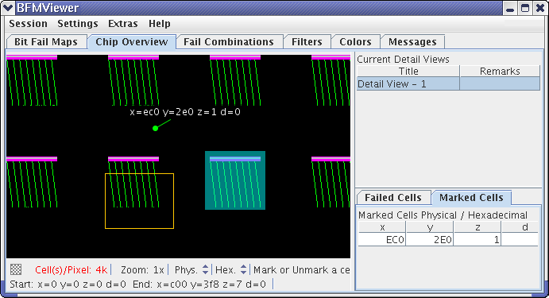

Chip Overview
The Chip Overview tab displays the bit fail maps that have been loaded into the BFM Viewer, along with filters, lists of detail views, failed cells, and marked cells.

The tab consists of the main area, a status bar, and three lists - Current Detail Views, Failed Cells, and Marked Cells.
Main area
The main area of the window displays the loaded bitmaps, with different colors indicating different combinations of failures in the various layers. The various combinations are listed in the Fail Combinations tab; the actual colors of the combinations and of the other elements are determined by the settings in the Colors tab.
The shortcut menu contains these commands:
- Pan/Zoom: This command is only available in detail views. If this mode is chosen, you can click and drag the displayed bit fail map around in the detail view window.
- Mark/Unmark Cell: If this mode is chosen, clicking anywhere in the displayed bit fail map marks the cell on which you have clicked (or unmarks it if it was marked before). Marked cells are listed in the Marked Cells list (see below).
- New Detail View: If this mode is chosen, clicking and dragging in the displayed bit fail map selects the area for a new detail view. The new view is indicated in the bit fail map by a frame (when the Viewer Areas option is activated in the shortcut menu), added to the Current Detail Views List (see below) and a window showing the detail view is opened (see Detail view).
- Move Detail View: If this mode is chosen, clicking an existing detail view in the displayed bit fail map lets you drag it to a different place. The view in the detail view window is updated accordingly.
- Define Analysis Area: If this mode is chosen, clicking and dragging in the displayed bit fail map specifies the area as the analysis area. The analysis area is indicated by a transparent rectangle in the bit fail map (when the Viewer Areas option is activated in the context menu).
- Display: The options in this submenu correspond to those available in the Display and View sections of the Global Settings window.
- Export: Choosing this command lets you save the current display from the main area together with information from the status bar as a PNG graphic.
Status bar
The status bar displays information about current display modes and the mouse pointer position. Some of the settings can be changed in the status bar.
The status bar contains these items:
- Cells/Pixel: The number of device cells that are represented by each
pixel in the bit fail map at a zoom level of 1x. Multiples of 1024 are indicated with "k"; for
example, "4k" means 4096 cells.
This setting can be changed in detail views but not in the chip overview.
- Zoom: The current zoom factor of the display.
This setting can be changed in detail views but not in the chip overview.
- Address type (Log, Topo, or Phys): The type of address displayed - logical, topological, or physical.
- Numeric system (Dec or Hex): The numerical system in which the addresses are displayed - decimal or hexadecimal.
- Mouse click mode: What action is performed when you click or click and drag the mouse.
- Start: The cell coordinates of the upper left-hand corner of the displayed area. This information is displayed only when the mouse pointer is not inside the bit fail map area.
- End: The cell coordinates of the lower right-hand corner of the displayed area. This information is displayed only when the mouse pointer is not inside the bit fail map area.
- Pos.: The location of the mouse pointer in local coordinates of the bit fail map. This information is displayed only when the mouse pointer is inside the bit fail map area.
Depending on the address type chosen, the coordinates displayed in the Start, End, and Pos. sections are x and y or x, y, z, and d.
Current Detail Views
The Current Detail Views list contains all detail views that you have created. The list has two columns:
- Title:The name of the detail view.
- Remarks: Any comments that you have entered for this view. Double-clicking a remark lets you edit it.
The currently active view is highlighted in the table. Clicking a view in the table makes it active.
Failed Cells
The Failed Cells list contains all failed cells with their coordinates.
The setting of the Analyze All option in the Analysis Area window determines whether the failed cells from the entire bit fail map are listed (Analyze All on) or just the cells from the current analysis area (Analyze All off; and an analysis area must have been defined).
The maximum number of listed cells is determined by the Failed Cells List setting in the Global Settings window.
If the Failed Cells List Enabled option in the Extras menu is deactivated, no failed cells are displayed.
The Failed Cells list contains these columns:
- x: The listed cell's x-coordinate.
- y: The listed cell's y-coordinate.
- z: The listed cell's z-coordinate. This column is not displayed if topological addresses are shown.
- d: The data that the cell contains (0 or 1). This column is not displayed if topological addresses are shown.
- Remarks: Any notes you have entered for the failed cell. Double-clicking a remark lets you edit it.
- F: A check mark in this column indicates that the failed cell matches at least one of the active filter rules. (See Using filters for details on filtering.)
- V: A check mark in this column indicates that the failed cell is currently visible in the Chip Overview display.
- S: Checking this option in a column displays the failed cell's marker and address in the Chip Overview display. Unchecking the option hides the marker and address. This is the same as choosing the Display Markers or Hide Markers command, respectively, from the shortcut menu.
Clicking any of the column titles sorts the list ascending by that column; shift-clicking sorts descending.
The shortcut menu of the Failed Cells list contains these commands:
- List Enabled: If this option is unchecked, no failed cells are displayed in this list. (This is the same setting as Failed Cells List Enabled in the Extras menu.)
- Decimal: Choosing this command displays addresses in decimal format.
- Hexadecimal: Choosing this command displays addresses in hexadecimal format.
- Logical Address: Choosing this command displays failed cell's logical addresses.
- Physical Address: Choosing this command displays failed cell's logical addresses.
- Topological Address: Choosing this command displays failed cell's logical addresses.
- Display Markers: Choosing this command displays markers and addresses of the selected failed cells in the main Chip Overview display. This is the same as checking the cells in the S column.
- Hide Markers: Choosing this command hides markers and addresses of the selected failed cells from the main Chip Overview display. This is the same as unchecking the cells in the S column.
- Export: Choosing this command lets you export the content of the Failed Cells list as a tab-delimited text file.
Marked Cells
The Marked Cells list contains all cells that have been marked in the Chip Overview display.
The Marked Cells list contains these columns:
- x: The listed cell's x-coordinate.
- y: The listed cell's y-coordinate.
- z: The listed cell's z-coordinate. This column is not displayed if topological addresses are shown.
- d: The data that the cell contains (0 or 1).. This column is not displayed if topological addresses are shown.
- Remarks: Any notes you have entered for the marked cell. Double-clicking a remark lets you edit it. Remarks appear next to the marked cells in the bit fail map when the marker text is set to display.
- S: Checking this option in a column displays the marked cell's marker and address in the Chip Overview display. Unchecking the option hides the marker and address. This is the same as choosing the Display Markers or Hide Markers command, respectively, from the shortcut menu.
Clicking any of the column titles sorts the list ascending by that column; shift-clicking sorts descending.
The shortcut menu of the Marked Cells list contains these commands:
- Decimal: Choosing this command displays addresses in decimal format.
- Hexadecimal: Choosing this command displays addresses in hexadecimal format.
- Logical Address: Choosing this command displays failed cell's logical addresses.
- Physical Address: Choosing this command displays failed cell's logical addresses.
- Topological Address: Choosing this command displays failed cell's logical addresses.
- Display Markers: Choosing this command displays markers and addresses of the selected failed cells in the main Chip Overview display. This is the same as checking the cells in the S column.
- Hide Markers: Choosing this command hides markers and addresses of the selected failed cells from the main Chip Overview display. This is the same as unchecking the cells in the S column.
- Remove Markers: Choosing this command deletes the selected cells from the list of marked cells and removes their markers from the bit fail map.
Functional changes
- Introduced before SmarTest 6.3.2